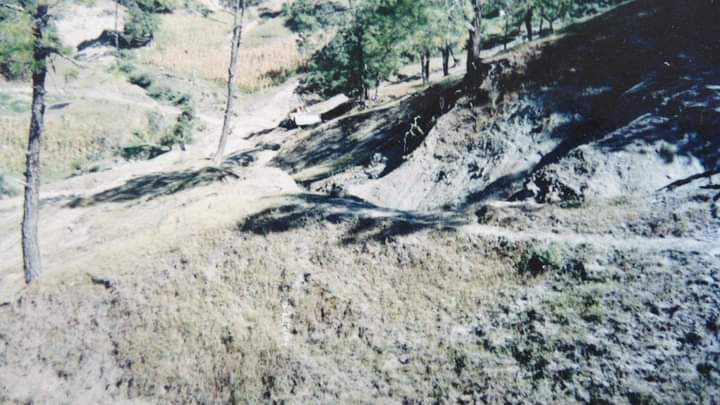

|
| |
El pueblo de San Juan Escutia ,(ñuu-jana'a) es un pueblo plenamente historico de usos y costumbres,con valores culturales y ancestrales.Juan Escutia una de las primeras agencias y la mas antigua del pueblo de Santa Maria Cuquila (Ñu'u kuiñi'i),que tenia por nombre:Rancho de San Juan Viejo,el fundador de esta comunidad fue el cacique Pedro Castañeda en el año de 1600,este pueblo s ubico por primera vez en el lugar conocido con el nombre de:tu-koyo(actualmente yukuiyo) lugar donde aparecio el santo patrono SAN JUAN BAUTISTA,por epidemia de la enfermedad colera,se reubican a un km ,al suroeste llamado:KAWA SKUNCHI(cueva de murcielago),por la propagacion de la enfermedad,se reubican nuevamente ,en lugar llamado: yuyuu dikaa (barranca de leon),fue entonces que por conflictos territoriales el pueblo de San Juan viejo se organiza para defendersus tierras toman la decision de restablecerse por ultima ocasion en la loma de:yoso ku'u Cruzii,posteriormente los vecinos se reorganizaron y nombran un grupo de hombres y mujeres a quienes se les conocio como:"consejo de ancianos",encabezado por un dirigente conocido como:tata ñuu quienes tomaron las riendas del pueblo ,fue asi como se organizaron para impulsar el desrrollo de la misma,que con gran empeño,esfuerzo y sufrimiento lograron obtener la categoria de agencia de policia en el año de 1985,con el nombre de San Juan Cuquila .Por decreto del congreso del estado el 9 de Enero de 2013,se eleva de categoria como agencia municipal,quedandose con el nombre oficial de Juan escutia,Tlaxiaco,Oaxaca.  |